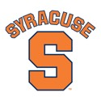

The 25 Best Online Master’s In Library Science Degree Programs
We live in the age of information. Since the development of the internet, information dissemination has increased exponentially and information technology has become one of the prevailing industries in the modern world. As information technology gains new significance, libraries previously confined to management of the written word are now free to explore exciting new options. The world generates more than 281 billion gigabytes of information yearly and the library of the modern day is one that manages, curates, and this information with cutting edge technology.
Through applying a multidisciplinary approach, library science has become a broader field than ever before and as such is attracting large numbers of both active and prospective students. While the need for traditional librarians is dropping as our culture becomes more familiar with online databases and search engines, masters programs in library science are focused on designing libraries and librarians for the future. In this article we explore 25 of the best online masters programs in library science, using a three dimensional metric consisting of ratings in the following categories: academic reputation and previous rankings, affordability, and flexibility. You can find a more thorough explanation of our metric below.
1. University of Wisconsin-Madison
The University of Wisconsin-Madison’s School of Library and Information Sciences (SLIS) takes our number one spot on this ranking. The program offers its students a great deal of flexibility in their education. Students may choose from four major specializations, allowing students the option of customizing their career path according to personal interests and goals. The program stands out for its willingness to meet the challenges of online education and thus offers small class sizes so students may have more one-on-one time with instructors and also educates students on how to make the most of online education. The program is extremely flexible, allowing students to choose from a wide-array of schedules and waving the GRE requirement for admission.
2. University of Washington
The University of Washington’s Information School (iSchool) is designed around the ideal of connecting people to information, and as such their information studies programs have received international reputation. The master’s of library science (MLIS) offers unique features and strengths that validate the iSchool’s reputation. For instance, the online component of the MLIS occurs at the same time as the residential component, so that instructors are completely focused on the current coursework and so that online students may interact and study with residential students. The University of Washington touts that there is no difference between their residential MLIS and the online MLIS. They evidence this claim with impressive student feedback statistics and high student success rates in careers after graduation.
3. Rutgers University
Rutgers University is a member of the iSchools Organization dedicated to advancing the information field. The library science’s program national recognition and the flexibility of its online education evidence this dedication. Rutgers offers a state-of-the-art online education with numerous starting dates, an entirely customizable schedule where students may choose to work day or night, and a dedication to student-peer and student-instructor interaction. Students enrolled in Rutgers’ online sciences program will interact with fellow students in both study sessions and group assignments, and will also be able to meet with their instructor for personal meetings to address personal interests and goals. Rutgers’ Library and Information Sciences program was ranked 6th national by U.S. News & World Report and its School Library Media program was ranked 2nd.
4. University of South Carolina
The University of South Carolina’s online masters programs are designed for those with busy lives. Thus USC’s online masters in library and information sciences offers an accelerated pace, so that students may finish the program quickly amid hectic schedules. The program is student outcome oriented and thus assigns faculty advisors to its students to help them take the right steps to reach the career they want. Faculty advisors help online students to find internships available near their location so that they have the option of earning real world experience while earning their degree. The program also focuses on delivering the most modern technologies in online education, and thus offers students a wide-array of options in their self-directed coursework through live interaction with peers, instructors, and the industry’s professionals.
5. University of Kentucky
The University of Kentucky’s online master’s in library and information sciences program offers its students some excellent incentives such as in-state tuition for its online students, unique opportunities in practicum, and study abroad programs. The program itself is highly flexible with asynchronous online coursework, individualized schedules, and full-time/part-time options. The entire program can be completed in as little as 36 credit hours if students are seeking efficient degree options. And for students interested in post-grad opportunities, the University offers graduates of the program internship opportunities at the Library of Congress, the National Library of Medicine, and Smithsonian Libraries.
6. Kent State University
Kent State University’s School of Library and Information Sciences (SLIS) is the university’s largest department and most popular master’s program and was ranked as one of the top 20 programs in informational studies by U.S. News & World Report. With over 600 graduate students enrolled, the program is thriving and has drawn some of the field’s most decorated faculty. Kent’s SLIS program takes advantage of their reputable faculty by tailoring the program’s specialization options to their faculty’s backgrounds and experience. Thus the program offers over 13 specializations and offers the option of creating your own specialization, personalized to suit unique career goals and interests. While offering a good deal of personal choice, the program maintains a high level of advisement and interaction between faculty and students, helping them to seek out the best career opportunities according to their interests. The program also offers impressive success rates with the majority of the program’s graduates taking a position within the field within six months to one year after graduation.
7. University of Southern California
The University of Southern California offers a master’s in management of library and information sciences (MMLIS) and though it is the most expensive in this ranking, it is also the most reputable in both the academic and cultural dimensions. The program is offered through the University’s business school, USC Marshall, which is one of the highest ranked business schools in the country and is well-known for its innovation in the field. USC’s MMLIS program is focused on generating the evolutions needed to bring library and information sciences into the modern age. The program consists of five 15 week semesters and can be completed in as little 20 months. In the program, students may choose between three specializations and a wide-array of electives to enable personal career goals.
8. Valdosta State University
Valdosta State University’s master’s in library and information sciences program is one of the most affordable and flexible in this ranking. Geteducated.com ranked the program as a “Best Buy,” mean it is affordable without sacrificing quality. The program consists of 39 non-thesis credit hours, which can be completed through entirely flexible coursework that has been designed to suit those with busy lives. Those wishing to pursue specialization may take additional coursework in the following optional tracks: Youth Services, Cataloging & Classification, Library Management, Reference Sources & Services, and Technology.
9. University of Maryland
The University of Maryland’s master’s in library science can be completed in just 36 credit hours, and how and when those hours are completed is entirely up to the student. As of Fall 2015 the program stopped following the cohort-based structure, and so now students may set their own pace and design the path of their coursework. To help students make the best decisions while personalizing their online education, the program offers a wide-array of advisers and what the program calls “Knowledge Areas” where students may view in-demand specializations and skillsets and the suggested requisite coursework. The University of Maryland stands behind the quality of its online program and boasts that the only difference between the online and residential options is the delivery, while the instructors, coursework, and teaching methods remain identical.
10. The University of Alabama
The University of Alabama’s master’s in library and information sciences program uses a synchronous schedule, meaning that online students attend courses online during a set timeframe. While this does sacrifice flexibility insofar as students will not be able to set their own class schedule, it does enable a great deal of collaboration between peers and with instructors. During the set class periods, students will meet virtually, work together on projects, and ask instructors questions in real time. The school of library and information sciences has been active at the University for over 30 years. Thus the University states that it offers the sum of this long history in a repackaged and modern format, designed to deliver quality education to students who are unable to pursue traditional education or just prefer the online environment.
11. Drexel University Online

Drexel University offers a nationally renowned, fully online MS in library sciences. U.S. News & World Report ranked Drexel’s College of Computing and Informatics as one of “America’s Best Graduate Schools” and its MLIS program 10th nationwide. With 6 different interactive concentrations the program enables students to pursue personal interests while maintaining a focus on career outcomes. The program helps students stay attuned to these outcomes through a heavy focus on adviser-student interaction, so that students may feel confident and informed in the choices they make during the program and after graduation. The program also offers a boost to more experienced applicants through providing credit for previous schooling and work experience in related fields.
12. University of Maryland, College Park

The University of Maryland, College Park is a member of the iSchool Foundation and thus seeks to provide the foundation for the future of technological and informational advancements. It offers a MLS program with a fully online option and a hybrid option where students may choose certain events or classes to attend on campus. While the program is one of the more expensive on this list, the University’s nationally acclaim and the MLS program’s success rates merit the expense. The program’s success is likely attributed to its focus on real-world experience and the fostering of personalized career goals. To generate these outcomes, the program offers the option of a thesis track where students develop and explore a subject of their own interest, or a field study track where students go out into the world and test a hypothesis of their own making.
13. Wayne State University
The School of Library and Information Sciences at Wayne State University features a built in specialization track. While the program requires a total of 36 credit hours, the credit hours are divided into 18 credit hours for the library and information science common core and 18 credit hours in an area of professional specialization, of which they offer three. The three specializations are library services, information management, and archives and digital content. Building specializations into the program’s requirements has allowed the University’s SLIS to offer its students a number of unique benefits. Mainly the built in specializations allow instructors to prepare accordingly and generate organized and valuable coursework for each of the specializations.
14. Florida State University

Florida State University’s School of Information offers three comparable online master’s degrees. These degree options are a master of science in library and information studies, a master of arts in library and information studies, and a master of science in information technology. Each of these programs is delivered synchronously through purely online technology, meaning students will be required to attend the virtual classroom for 2 hours a day monday through thursday. The program does offer several meeting times to cater to busier and international students, who might be on different schedules. FSU’s School of Information boasts an impressive faculty record, the majority of whom are full-time and hold PhDs in their respective fields of specialization, meaning students will receive instruction from valuable instructors.
15. University of Wisconsin, Milwaukee
Many students seek to make the most of their online education and wish to pursue diverse interests and career goals under the roof of one program. The University of Wisconsin’s MLIS program grants students such an opportunity, offering 9 dual-degree tracks in both master of art and master of science options to supplement students’ MLIS. For those wishing to diversify their interest in library and information sciences without branching out into another degree, the MLIS program offers 11 specialization tracks. The program helps students build up experience in these specializations through a wide-array of field work options, where students will be tasked with going out into the real world to conduct research.
16. University of North Carolina, Greensboro
The University of North Carolina, Greensboro’s MLIS department offers 6 different licensure options such as a master of library and information science with school library licensure, a school library supervisor licensure, and a master of library and information science with instructional technology licensure. Regardless of which track students choose to take, the UNCG’s MLIS program emphasizes educational experiences that mirror the real-world demands of the career. As such the faculty work closely with students to connect them with internships in libraries, media production projects, and research oriented fieldwork. The pledge of the program’s faculty is deliver the highest quality education through the online medium.
17. The University of Illinois
The University of Illinois’ SLIS has received internationally rankings and while the price tag for credit hours is higher than many on this list, the program is an accurate representation of the school’s stellar reputation. For instance, the SLIS is a member of the Web-based Information Science Education (WISE) Consortium, a group of 17 SLIS departments that collaborate in shared courses to compliment SLIS coursework. Students may choose to enroll in these classes to supplement their learning regimen and focus on specific interests. After graduation the program offers career advisement to help students find the jobs they want and also encourages alumni to remain in contact with the program to coach and advise current students.
18. University of North Texas
The University of North Texas offers a nationally ranked MLIS program with an emphasis on face-to-face interaction. While the courses may completeled online for the most part, “check-ins” are required several times per semester. According to the University this is what sets its program apart from others: their unique focus on the user-oriented study of technology. Thus the program values close collaboration with its distance learning students to ensure they are correctly navigating their online studies and are inline with the program’s philosophy. To accomplish this, distant learning students are assigned advisers and faculty mentors to help direct and motivate their time in the MLIS program and to ensure they are gaining real world experience through fieldwork and practicum.
19. Texas Woman’s University
For students looking for a gender collaborative environment, Texas Woman’s University’s MLIS program offers a flexible and highly affordable option. According to our metric, the program is the second most affordable on this list, but still offers a number of benefits. The program’s main focus is helping students to obtain the real world experience needed to succeed in the careers they desire. Thus two of the program’s main requirements are that students enroll in internships approved by faculty advisers and that they pursue electives tailored to their career goals. The program also maintains close ties with the industry to provide many learning and internship opportunities.
20. The University of Arizona
The University of Arizona’s MLIS program focuses on providing a multidisciplinary curriculum that mirrors the diverse and evolving industry while allowing students to tailor the coursework to personal interests and career goals. The program allows students to choose from over 20 different concentration electives, which include internships for course credit. Similarly, faculty work closely with students in order to help them create independent studies for course credit where students may design a course from the ground up according to their goals.
21. Syracuse University

As a member of the iSchool organization and as a member of the WISE consortium, Syracuse University demonstrates a strong commitment to distance learning and online technology. All faculty in the iSchool have been formally trained in online pedagogy and are passionate about delivering the utmost of quality in education in the virtual arena, and as such make a pledge to deliver only the most up to date and relevant teaching methods and coursework. The University also commits its on-campus career services department to the advisement and mentoring of its online students, helping them to find the right internships during their time at the program and the right jobs after graduation.
22. University of Buffalo
The University of Buffalo’s School of Information Sciences offers an online MLIS program with face-to-face requirements where students will receive the same relationship building options between student and instructor that are typically only available in residential programs. Coupled with the 9 specializations available the program is designed to help students personalize their online education while maintaining many of the benefits of residential learning. The 9 specializations available designed to represent the faculties’ strong suits, and thus through entering into a certain specialization students essentially take on a mentor to direct their study.
23. University of Pittsburgh
As a member of the iSchool network, The University of Pittsburgh’s MLIS program is committed to online education and employs the most up to date learning technology. The program requires 36 credit hours but it can be completed in just two years. The program is one of the oldest in the country and has been active for over a decade, servicing over 400 graduate students from more than 35 states. This history of the program’s education has proved to be a positive one as the program as has received national rankings and impressive student success statistics with the majority of students reporting that they were able to get the job that they wanted.
24. University of Southern Mississippi
The University of Southern Mississippi’s MLIS program is focused on student interests, career applicable experience, and personal schedules. Nearly half of the required 40 hours of credit hours are comprised of student selected electives, many of which can be designed entirely by the student. The program also requires that students take on a comprehensive research project of their own choosing, where they go out into the real world and to conduct their study. To complete the program students must take a comprehensive exam that proves the mastery of their specific interests and research.
25. St. John’s University
St. John University’s SLIS is designed to acclimate students to the demands of the industry with a unique concentration on research where students are encouraged to aim for publishing research. This research focus allows students to simultaneously pursue personal interests while building an experience record that is highly valued in job applicants. The SLIS department also grants students a great deal of flexibility and allows for personalized schedules in cases of unforgiving work or family schedules. As an added bonus, students who enroll in the program will be given a brand new laptop computer which they will keep after graduation.
Library Science Degree Program Ranking Methodology:
- Affordability (1/3): The average out-of-state tuition per credit hour.
- Flexibility (1/3): Whether the program offers specialized tracks, flexible hours, or personalized course loads.
- Academic Reputation (1/3): The rank of the school’s parent institution according to other prominent rankings such as US News